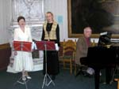
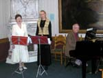

НОВИНИ 2006 РОКУ:
1. 30 січня 2006 р. виповнилося 75 років миколаївському поетові, лауреату премії ім. М.Ушакова, почесному члену Миколаївського Пушкінського клуба Емілю Ізраілєвичу Январьову (1931-2005). Громадскість міста відмітила цю дату та пам’ять про поета презентацієй його останньої книги віршів «Подлинник» на зібранні, котре відбулося 20 лютого в Центральній міській бібліотеці ім. М. Кропивницького. Книга видана видавництвом Ірини Гудим завдяки підтримки директора Миколаївської дирекції банка «Аваль» Сергія Прудкого та Благодійного фонда «Миколаїв-2000». Вечір вели учні юбіляра поети Володимир Пучков та Катерина Голубкова. На вечорі були присутні дружина поета Л.П. Костюк і донька Юнна.
2. У видавництві Ірини Гудим вийшла підбірка брошур Анатолія Золотухіна з 8-ми випусків «Невідоме про Пушкіна»:
Вип. 1 – «Дві історії про кохання»
Вип. 2 – «Рідня по натхненню (Пушкін і Гьоте)» У випускі наведена гіпотеза автора про те, як Пушкін допоміг
Гьоте (20 років він не міг знайти рішення!) закінчити «Фауста», а Гьоте, в свою чергу, допоміг Пушкіну вирішити проблему створення поеми «Мідний вершник».

Вип. 3 – «Пушкін і Рафаель»

Вип. 4 – «Казка про цара Салтана» - опис таємного приїзду Пушкіна до Миколаїва»
У випуску наведени докази того, що «Казка про цара Салтана» - є описом таємного приїзду Пушкіна у Миколаїв у жовтні 1823 р. на яхті Е. Зонтага «Втіха».
Приведено 41 примітка до казки, які коментують цю подію.

Вип. 5 – «Таїна поїздки Пушкіна «на сарану»
Вип. 6 – «О.С. Пушкін и В.І. Даль» - Розглянуті взаємовідношення Пушкіна з Далем. Надані докази (на підставах архівних матеріалів)
того, що Даль не писал пасквиля на жінку адмирала А.С. Грейга. Розглянуто провідницький малюнок Пушкіна, пов’язаний з долею Карла Даля, брата В.І. Даля.
Вип. 7 – «Пророк Росії»(тайна загибелі Пушкіна)

Вип. 8 – «Бешкет під час чуми» О.С. Пушкіна (трагедія Генія)» - Надані докази того, що трагедія О.С. Пушкіна «Бешкет під час чуми»
був прощальною піснею, передчуттям близької загибелі. Підгрунтям для розправи над поетом було те, що він фактично був ідеологом повстання декабристів.

Як варіант цієї підбірки брошур автором розроблена книга «Невідоме про Пушкіна» (208 стор. 98 іл.), в котрій представлені всі ці випуски. Книга вийшла невеликим накладом у видавництві Ірини Гудим.

3. Побачила світ книга Анатолія Золотухіна «Таємниці «Слова о полку Ігореві» (моногра-фічне дослідження).- Миколаїв, Видавництво Ірини Гудим, 2005.-560 стор., іл.

Автор працював над цією темою більше 25 років. У книзі стверджується, що «Слово о полку Ігореві» виконано в жанрі світського богослужіння, тобто світський зміст в ньому вкладено в форму богослужіння. Доведено, що текст пам’ятника за формою може бути представлено в формі всенощного дбання, або як візантійський канон. В останьому є більш як 250 акро-, мезо- та телевіршів, окремих і повитих особим чином. На підставах авторських вказівок поновлені техніка та правила складання таємних акромезотелевіршів. Завдяки цьому вдалося встановити, що автором «Слова о полку Ігореві» був Кирило Туровський (1101-1208), а в якості Бояна виведено нашого першого поета, літописця та художника Іларіона-Нікона (997-1088), з’ясовані інші важливі обставини їх житя та творчості, а також визначити дату створення та постановки пам’ятника в Київі в березні 1187 р. Реставровано сценарій першої постановки «Слова» та показано, що це була перша в світі опера, яка була створена за чотири віки до італійської.
4. МІЖНАРОДНИЙ ДЕНЬ ПОЕЗІЇ 2006 РОКУ В МИКОЛАЇВІ! Четвертий рік Миколаївський Пушкінський клуб разом з Миколаївською обласною организацією Національної спілки письменників України відмічає Всесвітний день поезії. Цим разом зустріч з професійно пишучими поетами пройшла у неділю 26 березня 2006 р., о 14 годині, в музичній вітальні художнього музею ім. В.В. Верещагіна. Вечір вели голова Спілки письменників Вячеслав Качурін і голова Пушкінського клуба Анатолій Золотухін. Вечір відкрили учні Марини Матвеєвой: Михайло Кван виповнив «Прелюдію и фугу» І.С. Баха, а Павло Тисляк – 1-у частину сонати Шуберта. На вечорі виступили поети Аркадій Суров (читав вірші Е. Январьова та власні вірші), Марина Матвеєва (читала власні вірші та виповнила на фортепіано твори Шопена). Власні вірши читали Михайло Ковалевський, Тамара Москаленко, Світлана Мезіна та інше. На заключення вечора Вячеслав Качурін виповнив романси на власні слова під акомпанимент гітари. На вечорі прозвучали у виконанні Валентини Захарової та Лілії Розніной, на фортепіано акомпанувал Валерій Апостолов: романс «Шукаю у природі красу» (вірши А. Чепурова, музика Я. Дубравина) і «Пісню про серця» (вірші В. Щеннікова, музика Г. Левкодимова). 


 
 |


|